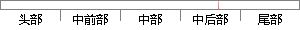

取灰度值为g的概率 为 ，则 图像 的灰度熵为：
片段位置图

相似结果
相似片段：
最小,而图像变模糊时,熵值将增大。假定图像 f(x,y)的灰度范围为[0,G]，对感兴趣图像区域进行直方图统计，这里我们以表示在k位置图像在感兴趣区域内取灰度值为g的概率，则该图像的灰度熵可以表示为： (2-8) (2-9) 不同的成像位置，图像熵值不同，离焦量越大，图像越模糊，灰度分布越均匀，熵值越大，而正确聚焦时，灰度变化明显，熵值最小，即2
| 对比库： | WriteCheck云资源库 |
| 来源： | www.yangsky.com 查看来源 |
| 发布时间： | 2014-01-18 |
| 相似率 | 100% （严重抄袭） |